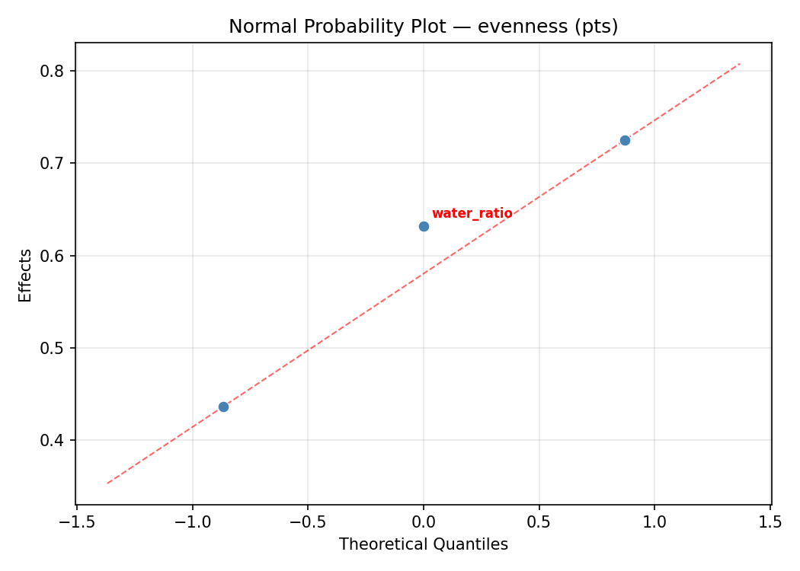
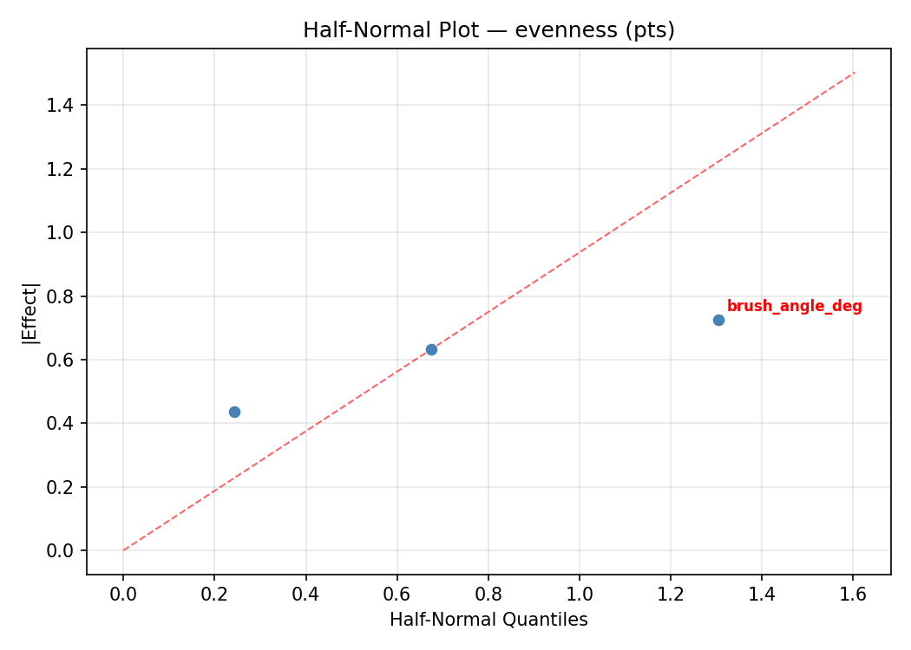
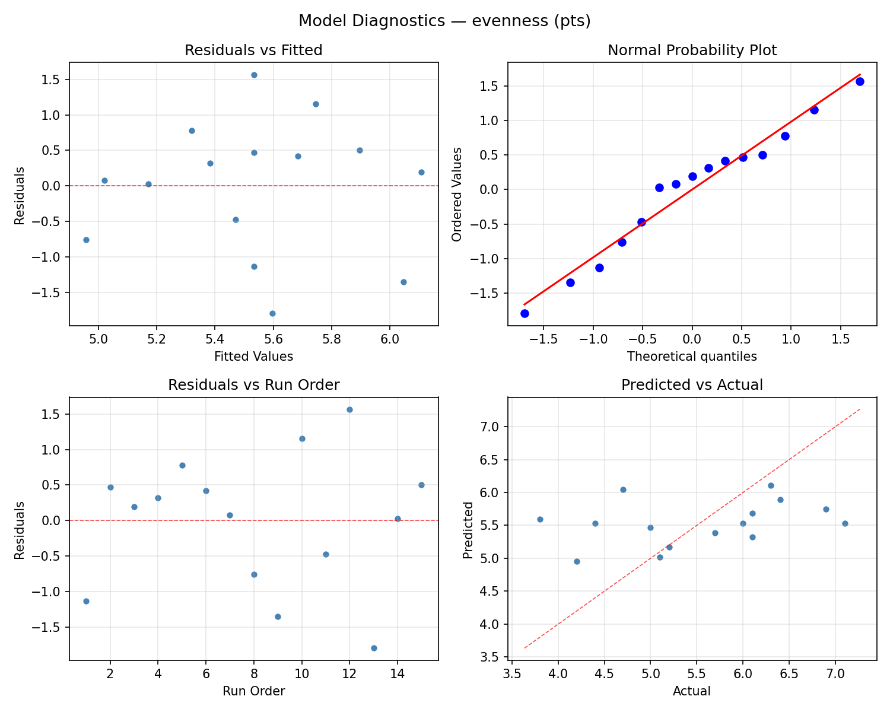
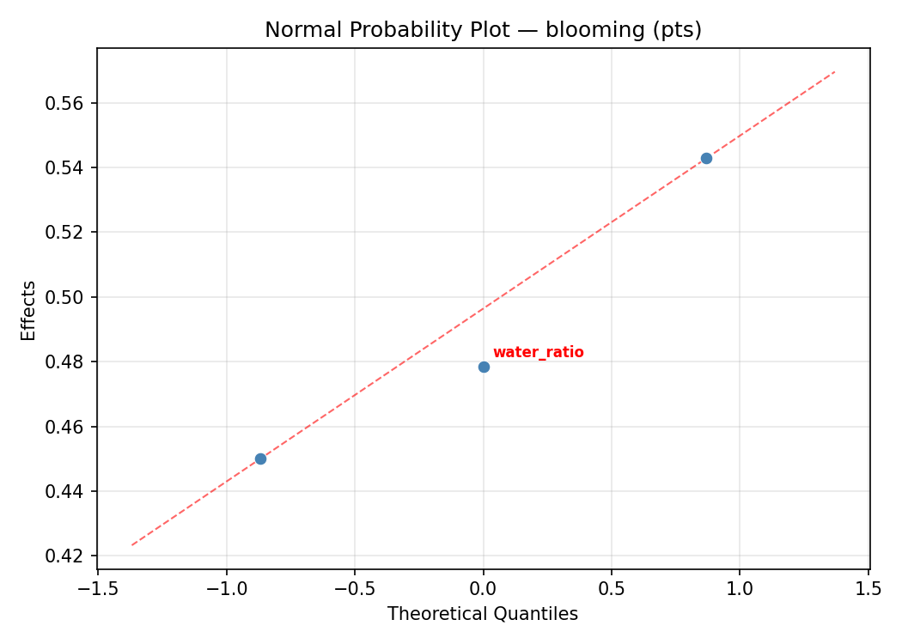
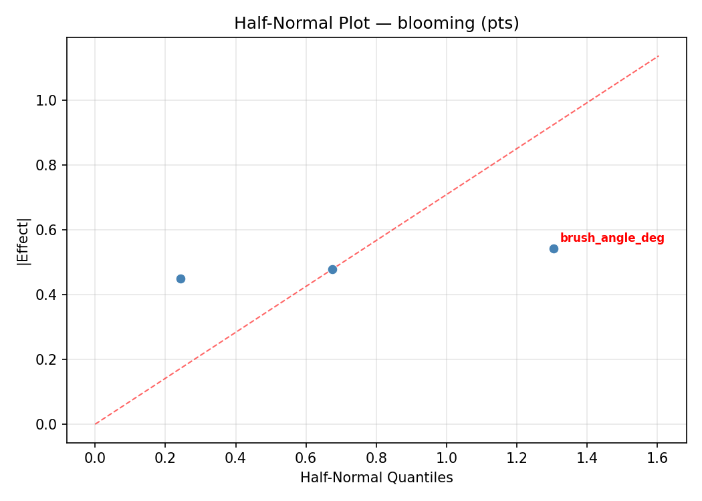
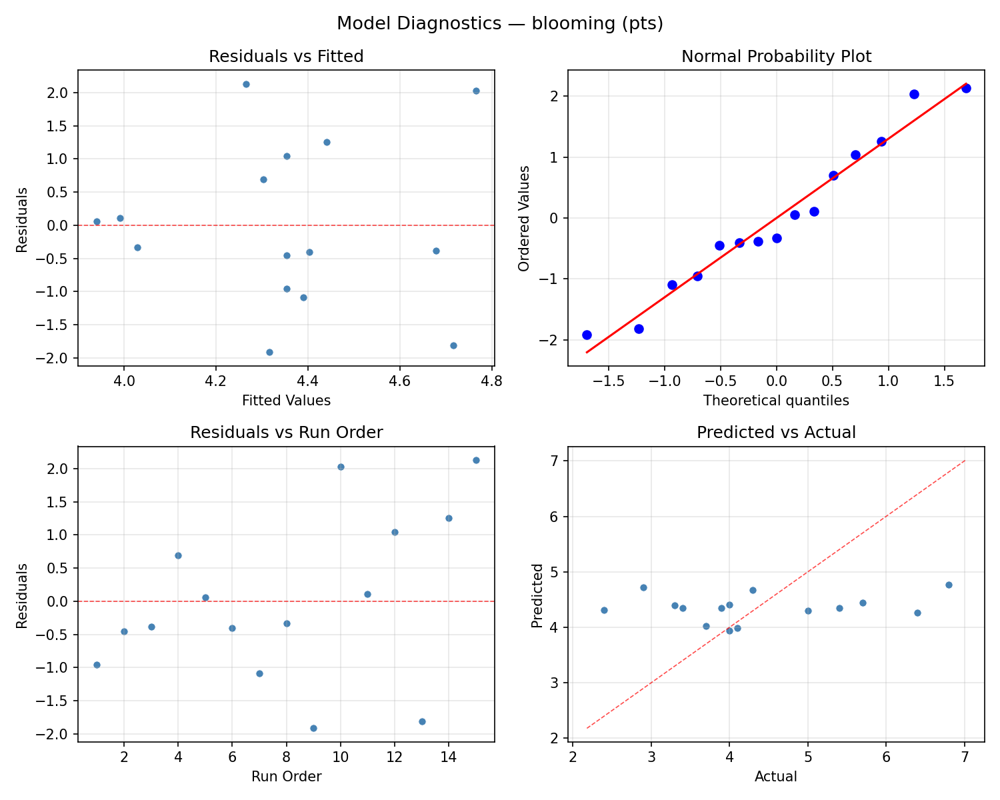

Summary
This experiment investigates watercolor wash technique. Box-Behnken design to maximize color evenness and minimize blooming by tuning water-to-pigment ratio, paper wetness, and brush angle.
The design varies 3 factors: water ratio (ratio), ranging from 2 to 8, paper wetness (level), ranging from 1 to 5, and brush angle deg (deg), ranging from 15 to 60. The goal is to optimize 2 responses: evenness (pts) (maximize) and blooming (pts) (minimize). Fixed conditions held constant across all runs include paper = 300gsm_cold_press, pigment = ultramarine.
A Box-Behnken design was chosen because it efficiently fits quadratic models with 3 continuous factors while avoiding extreme corner combinations — requiring only 15 runs instead of the 8 needed for a full factorial at two levels.
Quadratic response surface models were fitted to capture potential curvature and factor interactions. The RSM contour plots below visualize how pairs of factors jointly affect each response.
Key Findings
For evenness, the most influential factors were paper wetness (47.4%), water ratio (28.8%), brush angle deg (23.8%). The best observed value was 7.1 (at water ratio = 5, paper wetness = 1, brush angle deg = 60).
For blooming, the most influential factors were paper wetness (51.9%), brush angle deg (41.9%), water ratio (6.2%). The best observed value was 2.4 (at water ratio = 8, paper wetness = 3, brush angle deg = 60).
Recommended Next Steps
- Run confirmation experiments at the predicted optimal settings to validate the model.
- Consider whether any fixed factors should be varied in a future study.
Experimental Setup
Factors
| Factor | Low | High | Unit |
|---|
water_ratio | 2 | 8 | ratio |
paper_wetness | 1 | 5 | level |
brush_angle_deg | 15 | 60 | deg |
Fixed: paper = 300gsm_cold_press, pigment = ultramarine
Responses
| Response | Direction | Unit |
|---|
evenness | ↑ maximize | pts |
blooming | ↓ minimize | pts |
Configuration
{
"metadata": {
"name": "Watercolor Wash Technique",
"description": "Box-Behnken design to maximize color evenness and minimize blooming by tuning water-to-pigment ratio, paper wetness, and brush angle"
},
"factors": [
{
"name": "water_ratio",
"levels": [
"2",
"8"
],
"type": "continuous",
"unit": "ratio"
},
{
"name": "paper_wetness",
"levels": [
"1",
"5"
],
"type": "continuous",
"unit": "level"
},
{
"name": "brush_angle_deg",
"levels": [
"15",
"60"
],
"type": "continuous",
"unit": "deg"
}
],
"fixed_factors": {
"paper": "300gsm_cold_press",
"pigment": "ultramarine"
},
"responses": [
{
"name": "evenness",
"optimize": "maximize",
"unit": "pts"
},
{
"name": "blooming",
"optimize": "minimize",
"unit": "pts"
}
],
"settings": {
"operation": "box_behnken",
"test_script": "use_cases/281_watercolor_wash/sim.sh"
}
}
Experimental Matrix
The Box-Behnken Design produces 15 runs. Each row is one experiment with specific factor settings.
| Run | water_ratio | paper_wetness | brush_angle_deg |
|---|
| 1 | 5 | 1 | 15 |
| 2 | 5 | 3 | 37.5 |
| 3 | 8 | 3 | 60 |
| 4 | 8 | 3 | 15 |
| 5 | 5 | 3 | 37.5 |
| 6 | 5 | 3 | 37.5 |
| 7 | 2 | 3 | 60 |
| 8 | 8 | 1 | 37.5 |
| 9 | 5 | 1 | 60 |
| 10 | 8 | 5 | 37.5 |
| 11 | 2 | 3 | 15 |
| 12 | 5 | 5 | 60 |
| 13 | 2 | 1 | 37.5 |
| 14 | 2 | 5 | 37.5 |
| 15 | 5 | 5 | 15 |
Step-by-Step Workflow
1
Preview the design
$ python doe.py info --config use_cases/281_watercolor_wash/config.json
2
Generate the runner script
$ python doe.py generate --config use_cases/281_watercolor_wash/config.json \
--output use_cases/281_watercolor_wash/results/run.sh --seed 42
3
Execute the experiments
$ bash use_cases/281_watercolor_wash/results/run.sh
4
Analyze results
$ python doe.py analyze --config use_cases/281_watercolor_wash/config.json
5
Get optimization recommendations
$ python doe.py optimize --config use_cases/281_watercolor_wash/config.json
6
Multi-objective optimization
With 2 competing responses, use --multi to find the best compromise via Derringer–Suich desirability.
$ python doe.py optimize --config use_cases/281_watercolor_wash/config.json --multi
7
Generate the HTML report
$ python doe.py report --config use_cases/281_watercolor_wash/config.json \
--output use_cases/281_watercolor_wash/results/report.html
Features Exercised
| Feature | Value |
|---|
| Design type | box_behnken |
| Factor types | continuous (all 3) |
| Arg style | double-dash |
| Responses | 2 (evenness ↑, blooming ↓) |
| Total runs | 15 |
Analysis Results
Generated from actual experiment runs using the DOE Helper Tool.
Response: evenness
Top factors: paper_wetness (47.4%), water_ratio (28.8%), brush_angle_deg (23.8%).
ANOVA
| Source | DF | SS | MS | F | p-value |
|---|
| Source | DF | SS | MS | F | p-value |
| water_ratio | 2 | 0.3033 | 0.1517 | 0.410 | 0.6769 |
| paper_wetness | 2 | 0.6615 | 0.3308 | 0.894 | 0.4463 |
| brush_angle_deg | 2 | 0.2373 | 0.1186 | 0.321 | 0.7346 |
| Lack | of | Fit | 6 | 11.9512 | 1.9919 |
| Pure | Error | 2 | 0.7400 | | |
| Error | 8 | 12.6912 | 0.3700 | | |
| Total | 14 | 13.8933 | 0.9924 | | |
Pareto Chart

Main Effects Plot

Normal Probability Plot of Effects

Half-Normal Plot of Effects

Model Diagnostics

Response: blooming
Top factors: paper_wetness (51.9%), brush_angle_deg (41.9%), water_ratio (6.2%).
ANOVA
| Source | DF | SS | MS | F | p-value |
|---|
| Source | DF | SS | MS | F | p-value |
| water_ratio | 2 | 0.0202 | 0.0101 | 1.010 | 0.4065 |
| paper_wetness | 2 | 1.9513 | 0.9756 | 97.563 | 0.0000 |
| brush_angle_deg | 2 | 0.9713 | 0.4856 | 48.563 | 0.0000 |
| Lack | of | Fit | 6 | 19.4346 | 3.2391 |
| Pure | Error | 2 | 0.0200 | | |
| Error | 8 | 19.4546 | 0.0100 | | |
| Total | 14 | 22.3973 | 1.5998 | | |
Pareto Chart

Main Effects Plot

Normal Probability Plot of Effects

Half-Normal Plot of Effects

Model Diagnostics

Response Surface Plots
3D surfaces fitted with quadratic RSM. Red dots are observed data points.
blooming paper wetness vs brush angle deg

blooming water ratio vs brush angle deg

blooming water ratio vs paper wetness

evenness paper wetness vs brush angle deg

evenness water ratio vs brush angle deg

evenness water ratio vs paper wetness

Multi-Objective Optimization
When responses compete, Derringer–Suich desirability finds the best compromise.
Each response is scaled to a 0–1 desirability, then combined via a weighted geometric mean.
Overall Desirability
D = 0.7433
Per-Response Desirability
| Response | Weight | Desirability | Predicted | Dir |
|---|
evenness |
1.5 |
|
7.27 1.0000 7.27 pts |
↑ |
blooming |
1.0 |
|
4.71 0.4764 4.71 pts |
↓ |
Recommended Settings
| Factor | Value |
|---|
water_ratio | 6.2 ratio |
paper_wetness | 5 level |
brush_angle_deg | 15 deg |
Source: from RSM model prediction
Trade-off Summary
Sacrifice = how much worse than single-objective best.
| Response | Predicted | Best Observed | Sacrifice |
|---|
blooming | 4.71 | 2.40 | +2.31 |
Top 3 Runs by Desirability
| Run | D | Factor Settings |
|---|
| #5 | 0.6565 | water_ratio=5, paper_wetness=3, brush_angle_deg=37.5 |
| #6 | 0.6565 | water_ratio=8, paper_wetness=3, brush_angle_deg=15 |
Model Quality
| Response | R² | Type |
|---|
blooming | 0.9173 | quadratic |
Full Multi-Objective Output
============================================================
MULTI-OBJECTIVE OPTIMIZATION
Method: Derringer-Suich Desirability Function
============================================================
Overall desirability: D = 0.7433
Response Weight Desirability Predicted Direction
---------------------------------------------------------------------
evenness 1.5 1.0000 7.27 pts ↑
blooming 1.0 0.4764 4.71 pts ↓
Recommended settings:
water_ratio = 6.2 ratio
paper_wetness = 5 level
brush_angle_deg = 15 deg
(from RSM model prediction)
Trade-off summary:
evenness: 7.27 (best observed: 7.10, sacrifice: -0.17)
blooming: 4.71 (best observed: 2.40, sacrifice: +2.31)
Model quality:
evenness: R² = 0.6939 (quadratic)
blooming: R² = 0.9173 (quadratic)
Top 3 observed runs by overall desirability:
1. Run #3 (D=0.6597): water_ratio=5, paper_wetness=5, brush_angle_deg=15
2. Run #5 (D=0.6565): water_ratio=5, paper_wetness=3, brush_angle_deg=37.5
3. Run #6 (D=0.6565): water_ratio=8, paper_wetness=3, brush_angle_deg=15
Full Analysis Output
=== Main Effects: evenness ===
Factor Effect Std Error % Contribution
--------------------------------------------------------------
paper_wetness 0.5750 0.2572 47.4%
water_ratio 0.3500 0.2572 28.8%
brush_angle_deg 0.2893 0.2572 23.8%
=== ANOVA Table: evenness ===
Source DF SS MS F p-value
-----------------------------------------------------------------------------
water_ratio 2 0.3033 0.1517 0.410 0.6769
paper_wetness 2 0.6615 0.3308 0.894 0.4463
brush_angle_deg 2 0.2373 0.1186 0.321 0.7346
Lack of Fit 6 11.9512 1.9919 5.383 0.1649
Pure Error 2 0.7400 0.3700
Error 8 12.6912 0.3700
Total 14 13.8933 0.9924
=== Summary Statistics: evenness ===
water_ratio:
Level N Mean Std Min Max
------------------------------------------------------------
2 4 5.3000 1.2675 4.2000 7.1000
5 7 5.6000 0.8327 4.4000 6.9000
8 4 5.6500 1.2396 3.8000 6.4000
paper_wetness:
Level N Mean Std Min Max
------------------------------------------------------------
1 4 5.8250 0.8461 5.1000 6.9000
3 7 5.5286 0.8789 4.2000 6.4000
5 4 5.2500 1.4663 3.8000 7.1000
brush_angle_deg:
Level N Mean Std Min Max
------------------------------------------------------------
15 4 5.3250 0.8958 4.2000 6.3000
37.5 7 5.6143 1.0542 3.8000 7.1000
60 4 5.6000 1.2356 4.4000 6.9000
=== Main Effects: blooming ===
Factor Effect Std Error % Contribution
--------------------------------------------------------------
paper_wetness 0.8357 0.3266 51.9%
brush_angle_deg 0.6750 0.3266 41.9%
water_ratio 0.1000 0.3266 6.2%
=== ANOVA Table: blooming ===
Source DF SS MS F p-value
-----------------------------------------------------------------------------
water_ratio 2 0.0202 0.0101 1.010 0.4065
paper_wetness 2 1.9513 0.9756 97.563 0.0000
brush_angle_deg 2 0.9713 0.4856 48.563 0.0000
Lack of Fit 6 19.4346 3.2391 323.910 0.0031
Pure Error 2 0.0200 0.0100
Error 8 19.4546 0.0100
Total 14 22.3973 1.5998
=== Summary Statistics: blooming ===
water_ratio:
Level N Mean Std Min Max
------------------------------------------------------------
2 4 4.3000 1.5427 2.4000 5.7000
5 7 4.3571 1.2122 3.3000 6.8000
8 4 4.4000 1.4629 2.9000 6.4000
paper_wetness:
Level N Mean Std Min Max
------------------------------------------------------------
1 4 4.9500 1.5927 3.3000 6.8000
3 7 4.1143 1.1852 2.4000 6.4000
5 4 4.1750 1.2121 2.9000 5.4000
brush_angle_deg:
Level N Mean Std Min Max
------------------------------------------------------------
15 4 4.0750 0.7411 3.3000 5.0000
37.5 7 4.2857 0.9582 2.9000 5.7000
60 4 4.7500 2.1810 2.4000 6.8000
Optimization Recommendations
=== Optimization: evenness ===
Direction: maximize
Best observed run: #12
water_ratio = 5
paper_wetness = 1
brush_angle_deg = 60
Value: 7.1
RSM Model (linear, R² = 0.0606, Adj R² = -0.1955):
Coefficients:
intercept +5.5333
water_ratio -0.0875
paper_wetness -0.1875
brush_angle_deg +0.2500
RSM Model (quadratic, R² = 0.7985, Adj R² = 0.4359):
Coefficients:
intercept +4.6333
water_ratio -0.0875
paper_wetness -0.1875
brush_angle_deg +0.2500
water_ratio*paper_wetness -0.1750
water_ratio*brush_angle_deg -0.3500
paper_wetness*brush_angle_deg -0.1000
water_ratio^2 -0.2792
paper_wetness^2 +1.5208
brush_angle_deg^2 +0.4458
Curvature analysis:
paper_wetness coef=+1.5208 convex (has a minimum)
brush_angle_deg coef=+0.4458 convex (has a minimum)
water_ratio coef=-0.2792 concave (has a maximum)
Notable interactions:
water_ratio*brush_angle_deg coef=-0.3500 (antagonistic)
Predicted optimum (from quadratic model, at observed points):
water_ratio = 5
paper_wetness = 1
brush_angle_deg = 60
Predicted value: 7.1375
Surface optimum (via L-BFGS-B, quadratic model):
water_ratio = 3.58955
paper_wetness = 1
brush_angle_deg = 60
Predicted value: 7.1992
Model quality: Good fit — general trends are captured, some noise remains.
Factor importance:
1. paper_wetness (effect: 1.7, contribution: 60.4%)
2. brush_angle_deg (effect: 0.6, contribution: 21.6%)
3. water_ratio (effect: 0.5, contribution: 18.0%)
=== Optimization: blooming ===
Direction: minimize
Best observed run: #9
water_ratio = 8
paper_wetness = 3
brush_angle_deg = 60
Value: 2.4
RSM Model (linear, R² = 0.0097, Adj R² = -0.2604):
Coefficients:
intercept +4.3533
water_ratio -0.1375
paper_wetness -0.0875
brush_angle_deg +0.0250
RSM Model (quadratic, R² = 0.4156, Adj R² = -0.6363):
Coefficients:
intercept +3.7667
water_ratio -0.1375
paper_wetness -0.0875
brush_angle_deg +0.0250
water_ratio*paper_wetness +0.6500
water_ratio*brush_angle_deg -0.7250
paper_wetness*brush_angle_deg +0.2750
water_ratio^2 -0.2583
paper_wetness^2 +1.0917
brush_angle_deg^2 +0.2667
Curvature analysis:
paper_wetness coef=+1.0917 convex (has a minimum)
brush_angle_deg coef=+0.2667 convex (has a minimum)
water_ratio coef=-0.2583 concave (has a maximum)
Notable interactions:
water_ratio*brush_angle_deg coef=-0.7250 (antagonistic)
water_ratio*paper_wetness coef=+0.6500 (synergistic)
Predicted optimum (from linear model, at observed points):
water_ratio = 2
paper_wetness = 1
brush_angle_deg = 37.5
Predicted value: 4.5783
Surface optimum (via L-BFGS-B, linear model):
water_ratio = 8
paper_wetness = 5
brush_angle_deg = 15
Predicted value: 4.1033
Model quality: Weak fit — consider adding center points or using a different design.
Factor importance:
1. paper_wetness (effect: 1.2, contribution: 61.9%)
2. water_ratio (effect: 0.5, contribution: 25.9%)
3. brush_angle_deg (effect: 0.2, contribution: 12.2%)